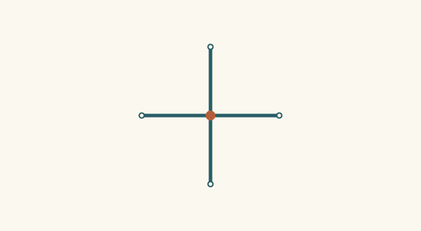
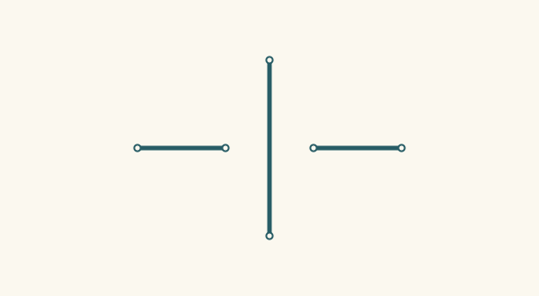

Actual shared sites and projected crossings are separate. Purple dashed continuations and orange foreground strokes depict unresolved proposals. The original source remains available and unchanged.
J01 · Crossing without a junction
Two complete strokes cross in the declared affine support. They have four endpoint sites and two physical components. Both proposed depth orders remain unresolved; neither creates a shared site.
The same visible support is split into four strokes meeting at one actual shared site. A connection query sees one component and six incident stroke pairs. The projected-crossing reader need not invent an extra intersection.
Observed drawing

1 actual joined sites · 6 incident stroke pairs · 1 components0 strict projected crossings · 0 endpoint contacts · 0 gaps · 0 candidates · 0 open read evidence
J03 · Actual branching Y
Three strokes share a site with no opposed ray pair. This is actual branching topology; its Y-like read does not claim historical growth, botanical identity, or ownership by one original object.
1 actual joined sites · 3 incident stroke pairs · 1 components0 strict projected crossings · 0 endpoint contacts · 0 gaps · 0 candidates · 0 open read evidence
J04 · Actual T junction
One shared site has three incident rays, including one opposed pair. The branch is known; an absorbing or transmitting flow law would still need a separate connection contract.
The picture agrees with the T, but the rail has no middle site and the stem endpoint remains independent. Formal contact support is evidence for a possible reading, not authority to split the rail or weld sites.
Facing collinear endpoints support a proposed continuation. A separate transverse strand occupies the gap, supporting an occlusion hypothesis. Deliberate cut endpoints remain a competing candidate; no hidden line is asserted.
Observed drawing

0 actual joined sites · 0 incident stroke pairs · 3 components
The separated horizontal strands are offset in the other axis. The blocked witness retains that displacement; a same-direction impression cannot establish a straight hidden continuation.
0 actual joined sites · 0 incident stroke pairs · 3 components0 strict projected crossings · 0 endpoint contacts · 0 gaps · 0 candidates · 0 open read evidence
J08 · Angular crossing remains open
Both strokes carry two-axis displacement. This narrow reader deliberately supplies no general angular-intersection solver. The source is complete while that selected question remains open.